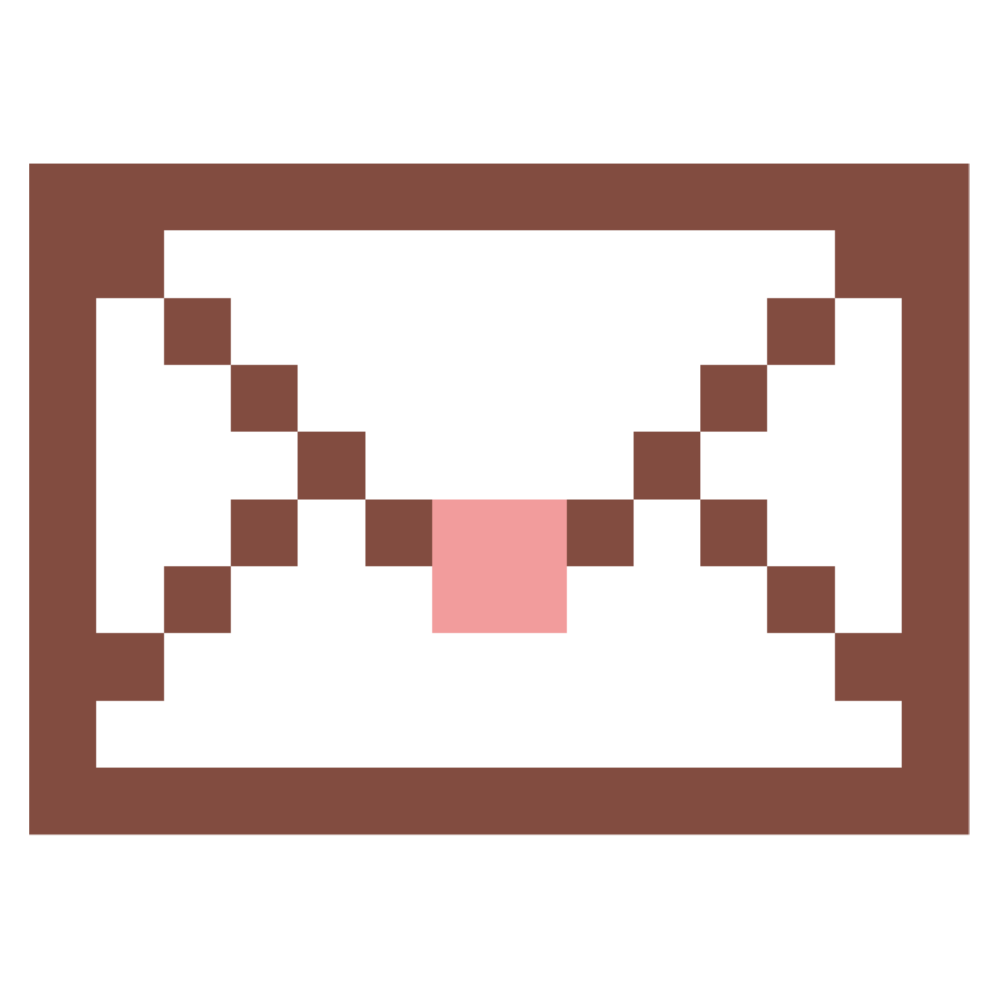

14-02-2026
"I didn't know where I wanted to go, but when I found you I knew where I wanted to stay."

Una carta que habla del dia que te conoci
y como te volviste la persona que más amo.
Motivo: Porque contigo cada momento se siente mas real
Destino: El Hirosaki Cherry Blossom Festival, rodeados de sakuras en flor.
Escenario: Caminar por el Hirosaki Park en Hirosaki, con el castillo y los pétalos cayendo alrededor.
Razón: No solo lo magico, si no la experiencia de vivirlo contigo.
Si no tienes idea de que dar en el intercambio
te compartimos algunas ideas de regalos
Porfavor, confirma tu asistencia andes del 15 de Diciembre, 20205